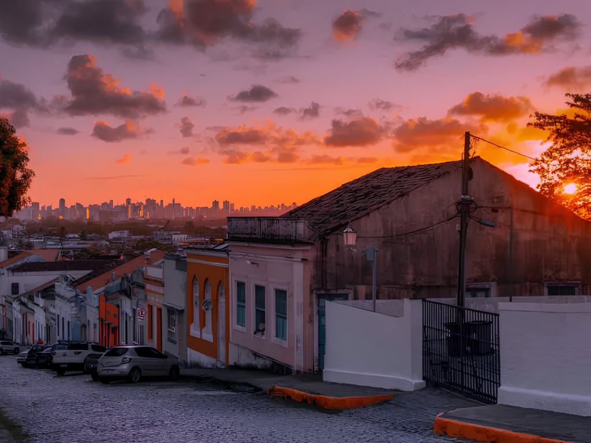

Sergipe é o menor estado do Brasil em extensão territorial, localizado na região Nordeste, e conhecido por suas praias, rios e rica cultura regional. Sua capital é Aracaju, uma cidade planejada que se destaca pela qualidade de vida e pelo turismo. A economia sergipana é baseada no setor de serviços, turismo, agricultura, pecuária e exploração de petróleo e gás natural. O estado possui atrações naturais importantes, como o Cânion do Xingó, um dos maiores cânions navegáveis do mundo, localizado às margens do Rio São Francisco. Culturalmente, Sergipe preserva tradições nordestinas através do forró, das festas juninas, do artesanato e da culinária típica, com pratos como moqueca, caranguejo e arroz de hauçá.
